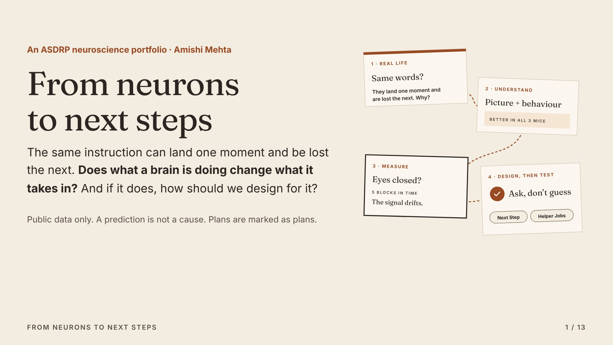
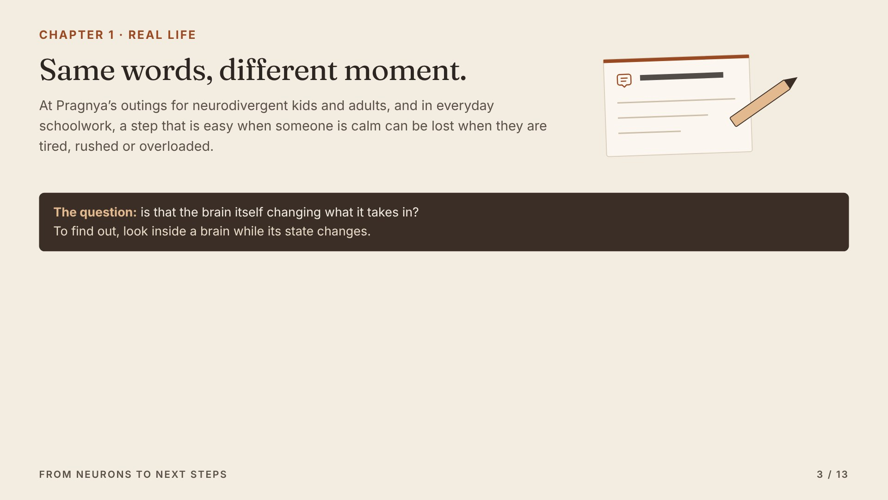
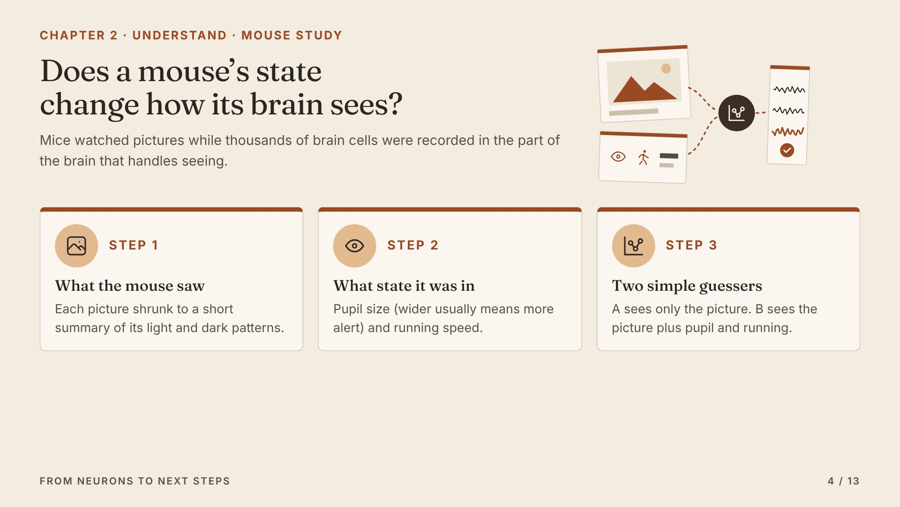
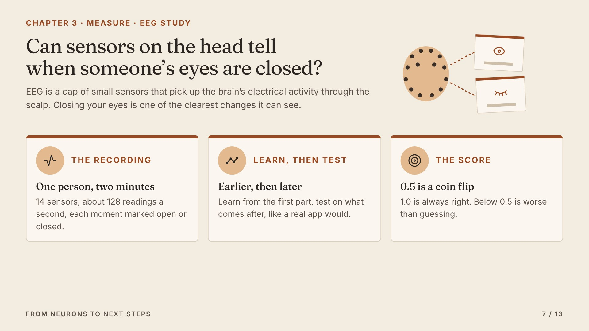
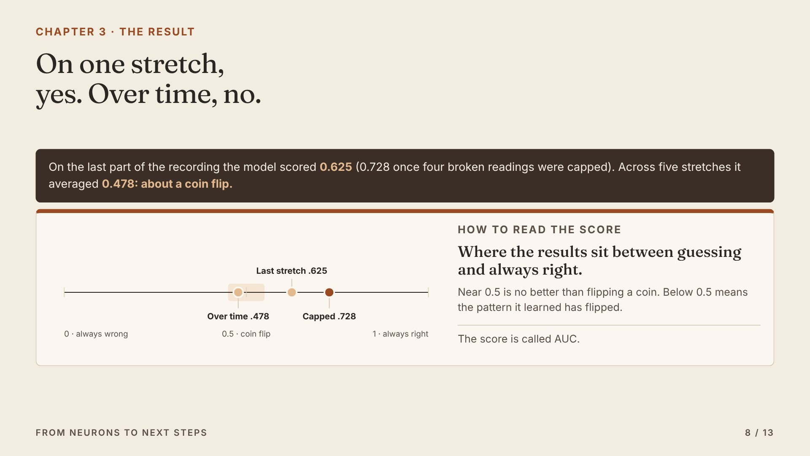
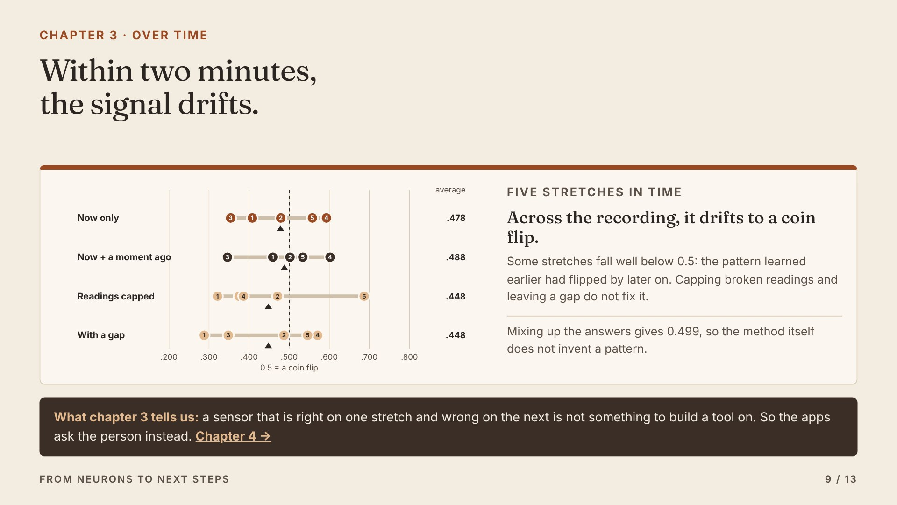
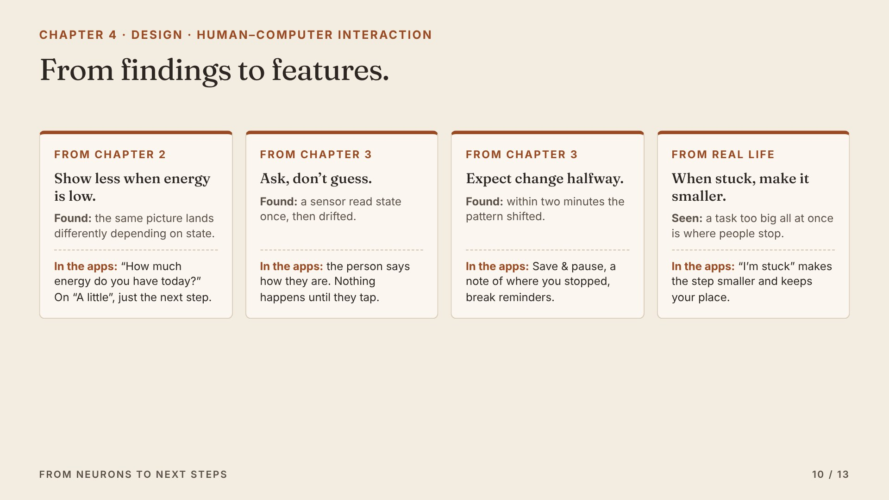
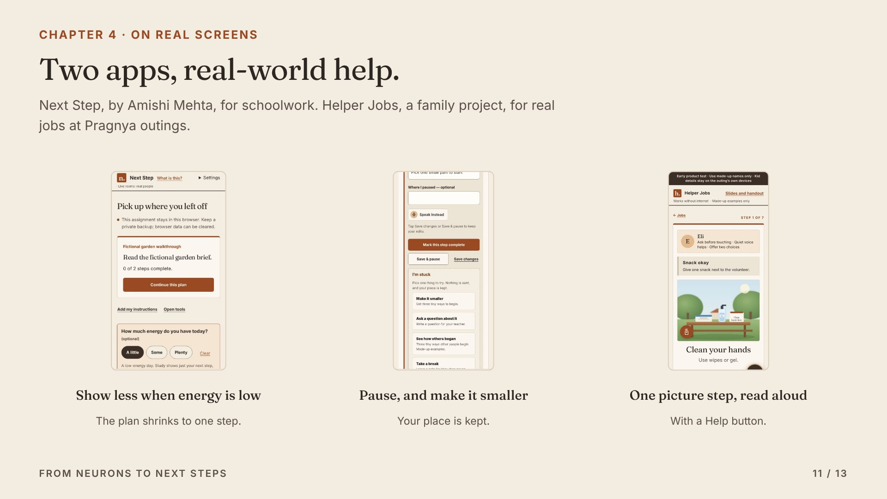
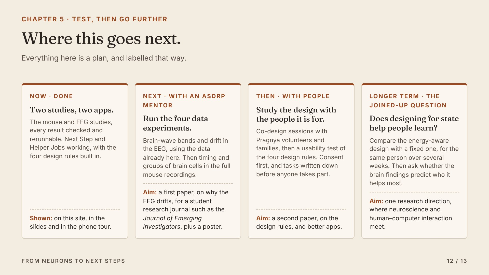
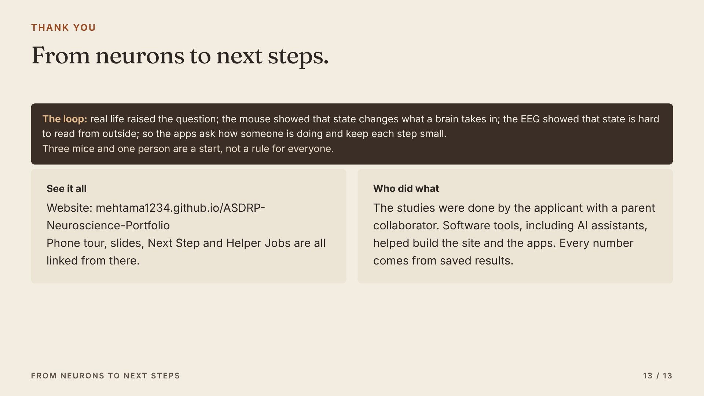

← All chapters
The slides
The same story, in {len(SLIDES)} slides.
Built from the same words, charts and drawings as the website. Present full screen, open the presenter view with speaker notes, or download the PDF.

1 · From neurons to next stepsThis is one question, followed from real life into the lab and back out again. I’ll show two studies with public brain recordings, then the …- 2 · The loopHere is the whole talk. Real life raised a question. A mouse study helps us understand it. An EEG study asks whether we can measure it in a …

3 · Chapter 1, real lifeThis is where it started. The same instruction works one moment and is lost the next. That made us ask whether the brain’s state itself chan…
4 · Chapter 2Scientists shared recordings of thousands of brain cells from mice watching pictures. We built two simple guessers. Guesser A only knows the…- 5 · Chapter 2 resultIn every mouse, guesser B wins. The scores look small because single brain cells are noisy, so the thing to look at is the jump from A to B:…
- 6 · Chapter 2 checksWe tried to break it. When we gave guesser B the wrong moments’ state, the gain almost vanished. Leaving out any one mouse kept the gain. So…

7 · Chapter 3Now a person. EEG is a cap of sensors on the head. Closing your eyes is one of the easiest changes for it to see. If a simple model cannot r…
8 · Chapter 3 resultOn one stretch it worked reasonably well. But when we tested it on five stretches across the recording, it averaged a coin flip.
9 · Chapter 3Each dot is one stretch. They land on both sides of a coin flip, and some are worse than guessing. Within two minutes, the signal drifted. S…
10 · Chapter 4This is where the science turns into design. Each finding gives a rule, and each rule is a real feature in the apps.
11 · Chapter 4Here they are. Next Step asks about energy and shrinks the plan. Save and pause and I’m stuck make it easy to stop and come back. Helper Job…
12 · Chapter 5Next, with an ASDRP mentor, we run four more data experiments and write the first paper, on why the EEG drifts. Then design studies with the…
13 · The loop, who did what, and where to see everything.To sum up the loop. Everything I showed is on the website, with the phone tour, these slides and both apps linked from it. Thank you.